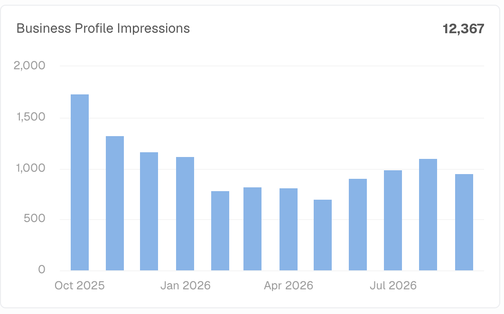
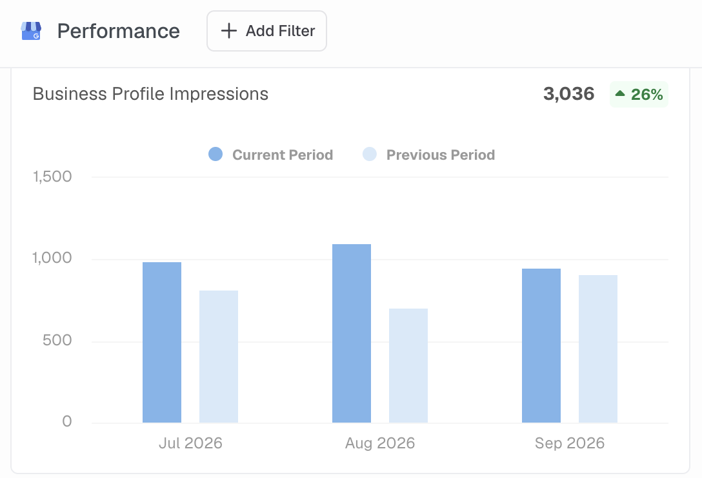
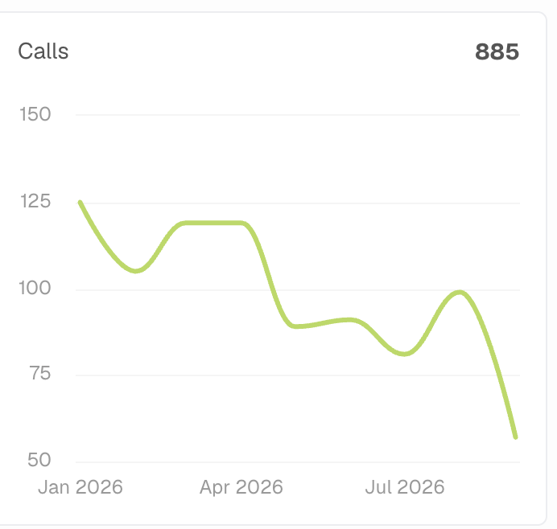
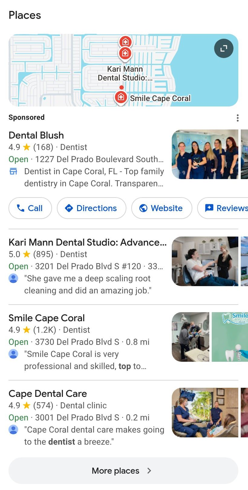
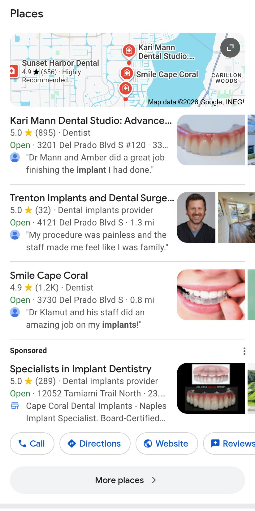
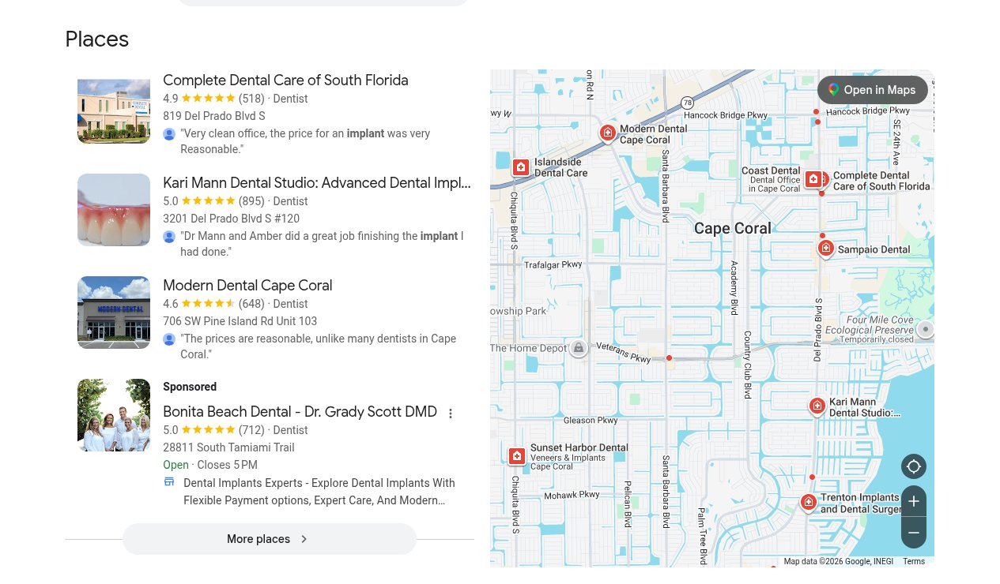
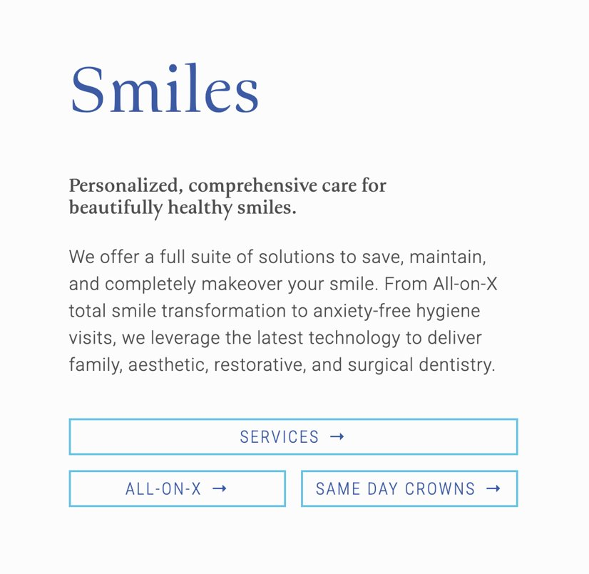

Kari sent her Google profile's Performance screen showing 261 interactions for September. Obviously, the situation is more nuanced than that, and we have some good news to share, but it will require proper framing.
I think it's good that they are trying to stipulate actual GBP performance metrics instead of rankings. I consider this progress. But now we need to help them understand how to think about measuring performance change over time. Part of that means they need to see what their performance has looked like over the past year or so (as far back as Google's data goes, at least). Long story short is that we got on a ship while it was already sinking. Our efforts aren't doing nothing, but it's not a quick fix by any stretch of the imagination.



Kari mentioned fear of her profile not showing up to anyone because they aren't at the top of the page on Google due to a myriad of factors like LSA. Google really has stacked more paid placements above the free map results. On a phone search for "dental implants cape coral" on September 29, four ads filled the first screen and a half before the map results started.
But the map results are not "the new page 2." They are still the main unpaid spot for a local search. On that implant search and on "best dentist in cape coral", Kari Mann was the first unpaid listing. We also did not see a single Local Services Ad on the ten Cape Coral searches I had Claude capture via Browserbase searches.
Regarding her comment that "google has gone to an infinite scrolling model..." On desktop, Google dropped infinite scroll in 2024 and went back to page buttons (Search Engine Roundtable, June 25, 2024). On phones, a "More search results" button loads the next set of results below, which works like a new page without leaving the one you are on. The loss in GBP Performance that we can measure is on the regular results page on phones. On Maps, the profile was shown around 906 times last summer and around 982 times this summer. Not being at the top does not mean they don't get seen or engaged with.
Underneath the "page 2" worry is the idea that rankings are what they should use as a performance metric. They aren't. A ranking is a signal. They show where the practice appeared for one search, from one spot, at one moment. Google itself says that local results are "mainly based on relevance, distance, and popularity," and "time [when you search] may be one of the biggest reasons why results vary between people" (Google Business Profile Help, Google Search Help).
If Kari wants to examine performance, she should use metrics like impressions, calls and website clicks. Those are how we measure performance. We look at calls and website clicks on their own rather than the interactions total, because that total also counts direction requests. If being outside the top three positions made their profile invisible, her impressions would fall toward zero. But GBP Performance shows that their impressions actually increased in Q3 compared to Q2 this year.
One search is not proof either way. A single search for the practice, by Kari or by us, shows one version of the page. Rank checks should come from our tool, which gives an objective view, and even then rankings do not replace the performance numbers Google provides in the Business Profile Manager.
Each screenshot is a simulated search: a fresh browser, not signed in to Google and with no search history, set to search as a person would from that location.



I recommend we request this from the dev and design team: a section on the homepage where each of Kari's top-3 priority services gets its spot in that block, with the service name, a very-very short description, and a link to that service's page. I understand if the team does not want to move in that direction, though.
Why it could help: The homepage is currently one of the main pages the Google profile sends people to directly. The Website button on the profile opens the homepage today. That stays true until the location page (which I recommend adding below) is live and the profile points to it; after that, the homepage is still where most other visitors land.
For those visitors, the homepage is the first thing they see of the practice after clicking through from the Google Business Profile.
Before we mention it to Kari, dev and design need to confirm that they can do this, and we also have to decide if it is something we even want to offer. Once they do, it is worth telling Kari, because it is the page her Google profile currently sends people to, and it can indirectly help the profile's relevance for priority services.

I also think we should add a new page just dedicated to talking about the Cape Coral office, and a rewrite of the contact page so it is only about getting in touch. A proper location page does not exist yet.
Then point the Google profile at it. My recommendation is that once the location page is live, the Website link on the Google profile can go to it instead of the homepage. The page should be, in effect, an on-site version of the Google profile: the same name, address, phone, hours, map and some photos, plus links to the priority services Kari wants to promote.
What is there now. The contact page (karimanndentalstudio.com/contact-us) is doing both jobs. Its main heading is "Visit Kari Mann Dental Studio in Cape Coral, FL", and it has four parts: the address and phone number with Schedule and Directions buttons, a map, a four-field message form, and the hours. It does not name any service, any nearby area, or anything a patient should know before they call/reach out.
The location page should be about the office and where it sits, and match important parts of the Google profile:
The contact page becomes about making contact easy and helping users efficiently reach out to address their needs/concerns in email or over the phone: